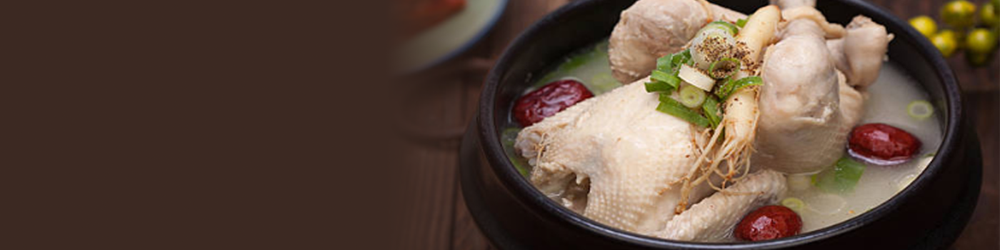

미식가의 선택!!?
추천 매거진

더위를 이길수 있는 보양식
2025-08-04
몸을 움직이지 않고 가만히 있어도 땀이 물 흐르듯 나는 요즘. 더위를 이길 수 있는 보양식 한 그릇이 간절히 생각난다. 보양식 하면 가장 먼저 떠오르는
음식, 바로 삼계탕이다. 삼계탕은 더위에 지친 기운을 회복하고 면역력을 높이는 대표적인 여름 보양식으로, 예로부터 복날이면 빠지지 않고 찾는 음식이다. 이런
닭 한마리에 찹쌀, 인삼, 마늘, 대추, 밤 등 각종 약재와 곡물을 넣고 푹 고아낸 삼계탕은 단순한 국물요리를 넘어선 우리 몸에 꼭 필요한 영양소의 집합체다.
닭고기는 고단백, 저지방 식품으로 소화가 잘 되면서도 근육 회복과 에너지 보충에 효과적이고, 인삼은 피로 해소와 면역력 강화에 도움을 준다. 마늘은 강력한
향균 작용과 혈액 순환 개선, 대추는 신경 안정과 피로 회복, 찹쌀은 속을 든든히 채우는 역할을 한다. 몸을 따뜻하게 데우고 기운을 끌어올려주는 재료들이 한데
어우러져 더위에 지친 몬에 생기를 불어넣는다. 무더운 날씨에 뜨거운 국물 음식이 웬 말이냐 싶지만, 오히려 땀을 흘리며 먹는 그 한 그릇이 몸의 순환을 도와
체내 열을 조절해주는 '이열치열'의 지혜가 담겨 있다. 단순한 보양식이 아닌, 몸과 마음을 동시에 회복시키는 여름의 의식 같은 음식. 삼계탕. 지치고 무기력한
여름날, 한 그릇의 따뜻한 삼계탕이 주는 위로는 생각보다 크다.
최신글
더위를 이길수 있는 보양식
2025-08-04
몸을 움직이지 않고 가만히 있어도 땀이 물 흐르듯 나는 요즘. 더위를 이길 수 있는 보양식 한 그릇이 간절히 생각난다. 보양식 하면 가장
먼저
떠오르는 음식, 바로 삼계탕이다. 삼계탕은 더위에 지친 기운을 회복하고 면역력을 높이는 대표적인 여름 보양식으로, 예로부터 복날이면 빠지지 않고
찾는
음식이다. 이런 닭 한마리에 찹쌀, 인삼, 마늘, 대추, 밤 등 각종 약재와 곡물을 넣고 푹 고아낸 삼계탕은 단순한 국물요리를 넘어선 우리 몸에
꼭
필요한 영양소의 집합체다. 닭고기는 고단백, 저지방 식품으로 소화가 잘 되면서도 근육 회복과 에너지 보충에 효과적이고, 인삼은 피로 해소와
면역력
강화에 도움을 준다. 마늘은 강력한 향균 작용과 혈액 순환 개선, 대추는 신경 안정과 피로 회복, 찹쌀은 속을 든든히 채우는 역할을 한다. 몸을
따뜻하게 데우고 기운을 끌어올려주는 재료들이 한데 어우러져 더위에 지친 몬에 생기를 불어넣는다. 무더운 날씨에 뜨거운 국물 음식이 웬 말이냐
싶지만,
오히려 땀을 흘리며 먹는 그 한 그릇이 몸의 순환을 도와 체내 열을 조절해주는 '이열치열'의 지혜가 담겨 있다. 단순한 보양식이 아닌, 몸과
마음을
동시에 회복시키는 여름의 의식 같은 음식. 삼계탕. 지치고 무기력한 여름날, 한 그릇의 따뜻한 삼계탕이 주는 위로는 생각보다 크다.
한 손에 쥐고 먹기 좋은 크기의 컵핑수
2025-08-04
올해는 4,000원~6,000원대 프랜차이즈 커피전문점 ‘컵빙수’가 SNS와 일소문을 타며 여름 간식 시장을 뒤흔들고 있다. 한 손에 쥐고
먹기
좋은 크기에 푸짐한 토핑, 화려한 비주얼, 여기에 극강의 가성비까지. '한끼 디저트'로 자리 잡은 컵빙수. 지금 가장 인기 있는 5종을
소개한다.
1. 메가커피 - 팥빙젤라또 파르페
전통과 트렌디함의 절묘한 조화. 고운 얼음 위에 달콤한 팥과 쫀득한 젤라또, 인절미 토핑까지 더해져 진한 만족감을 준다. 가격 대비 양도 넉넉해
‘가성비 컵빙수’로 주목받는 메뉴.
2. 컴포즈커피 - 팥절미 밀크쉐이크
빙수보다 부드럽게, 쉐이크보다 든든하게. 고소한 인절미 맛과 달콤함이 어우러진 진한 밀크쉐이크 타입의 컵빙수. 얼음을 씹기 싫은 날에도 부담
없이
즐기기 좋다.
3. 이디야 - 팥인절미 1인빙수
전통 빙수의 정석을 담아낸 1인 전용 빙수. 팥, 콩가루, 인절미라는 익숙한 조합을 깔끔한 비주얼로 재해석했다. 조용히 혼자 즐기기 좋은
‘나만의 여름
디저트’.
4. 우지커피 - 딥 컵빙수
얼음 위를 가득 채운 크림과 달콤한 팥, 그 위에 바삭한 시리얼까지. 디저트답게 진한 단맛과 식감의 조합이 매력. 한입한입이 꽉 차있어
'컵빙수계의
풀코스'라는 별명도 붙었다.
5. 공차 - 로얄밀크티 컵빙수 쉐이크
밀크티 덕후들의 여름 필수템. 고급스러운 로얄밀크티 베이스에 팥과 앙금, 쫀득한 토핑이 어우러져 독보적인 맛을 자랑한다. 공차 특유의 진한
풍미는 덤.
전통의 재해석부터 이색 조합까지 각기 다른 매력을 담은 컵빙수 5종. 당신의 취향을 저격한 여름 한 컵은 무엇인가요?